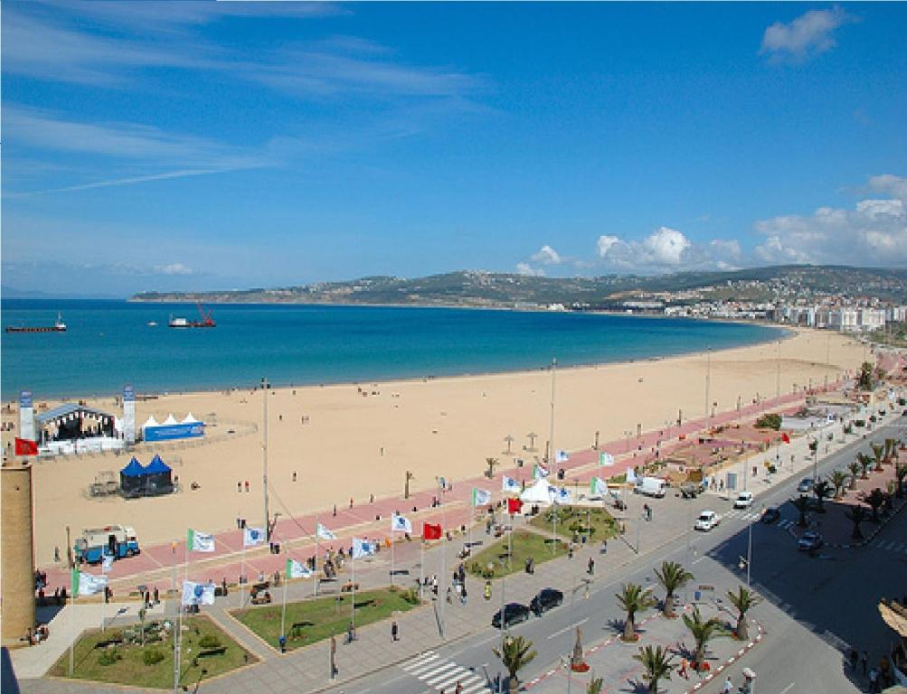

Over Tangier
Tangier, gelegen in het uiterste noorden van Marokko, is een stad met een rijke geschiedenis en een unieke ligging waar de Middellandse Zee en de Atlantische Oceaan samenkomen. Als poort tussen Afrika en Europa heeft Tangier door de eeuwen heen verschillende culturen, invloeden en beschavingen ontvangen, wat de stad tot een levendige en dynamische bestemming maakt. Van de bruisende medina tot de prachtige kustlijn, Tangier biedt een fascinerende mix van oud en nieuw.
Bezienswaardigheden in Tangier
Tangier staat bekend om zijn historische locaties, natuurlijke schoonheid en culturele bezienswaardigheden.
- Kasbah van Tangier: Gelegen boven de stad, biedt deze versterkte wijk een spectaculair uitzicht over de zee en herbergt het Kasbah Museum.
- Grotten van Hercules: Een mystieke grot die verbonden is met mythologie en een unieke opening naar de Atlantische Oceaan biedt.
- Medina van Tangier: De oude stad is een doolhof van smalle straatjes, markten en traditionele huizen die de authentieke sfeer van Marokko weerspiegelen.
- Grand Socco: Het centrale plein van de stad, ideaal om het lokale leven te observeren en de charmante sfeer van Tangier op te snuiven.
- Cap Spartel: Het punt waar de Middellandse Zee en de Atlantische Oceaan samenkomen, met adembenemende uitzichten en een iconische vuurtoren.
Wat te doen in Tangier?
Tangier biedt talloze activiteiten voor bezoekers, van ontspannen op het strand tot culturele verkenningen.
- Maak een wandeling door de oude medina en ontdek traditionele markten en ambachten.
- Bezoek het Kasbah Museum om meer te leren over de rijke geschiedenis van Tangier.
- Geniet van een boottocht langs de kust om de stad vanuit een ander perspectief te bewonderen.
- Proef de lokale keuken in een van de vele restaurants die authentieke Marokkaanse gerechten serveren.
- Ontspan op de stranden van Tangier, zoals Plage Malabata of Achakar.
Cultuur & Geschiedenis
De geschiedenis van Tangier gaat duizenden jaren terug en de stad heeft vele beschavingen zien komen en gaan, van de Feniciërs en Romeinen tot de Arabieren en Europeanen. In de 20e eeuw werd Tangier een internationale zone, wat leidde tot een mix van culturen en een kosmopolitische sfeer. De stad is ook een inspiratiebron geweest voor vele kunstenaars en schrijvers, zoals Paul Bowles, William S. Burroughs en Henri Matisse.
Vandaag de dag is Tangier een bruisende stad waar traditie en moderniteit samenkomen. Het is een cultureel centrum met een bloeiende kunst- en muziekscene, evenals een populaire bestemming voor toeristen van over de hele wereld.